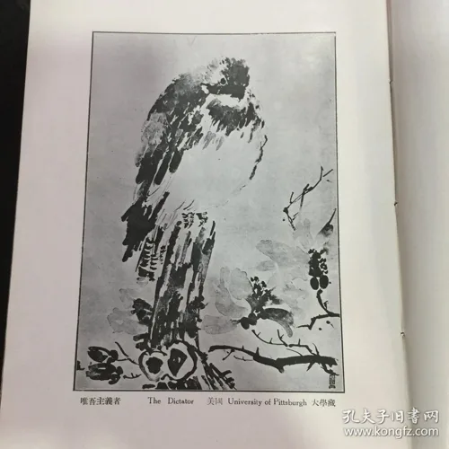
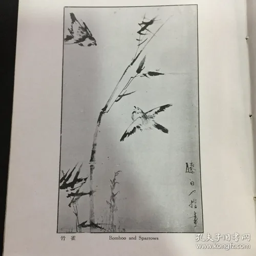
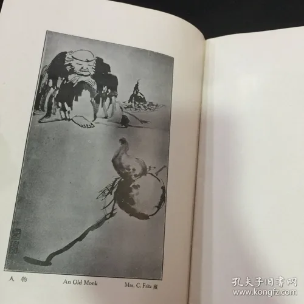

润例与指画集Commission rates and finger paintings
1924年6月16日 · 指画润例16 June 1924 · Rates for finger paintings
《申报》第8版左侧，滕白也按画幅大小开列润例。一幅三尺堂幅索八元，四尺十二元，五尺十六元，六尺二十四元，八尺四十元，丈匹六十元。A narrow column on page 8 of Shen Bao quotes eight yuan for a three-chi hanging painting, twelve for four chi, sixteen for five, twenty-four for six, forty for eight and sixty for a zhang-sized sheet.
《滕白也指畫潤例》原报整版与广告Newspaper page and advertisement1933年10月 · 雕塑绘画润例October 1933 · An illustrated rate booklet
据包铭新、王瑞华《画坛遗珠》，沪江大学商学院于10月10日出版《滕白也雕塑绘画润例》。指画每方尺十二元，笔画八元。书中记这本润例收指画十一件、雕像十件、浮雕三件；十一件指画中有六件也见于早年的指画集。Bao Mingxin and Wang Ruihua date the booklet to 10 October 1933 and attribute it to the University of Shanghai’s College of Commerce. A finger painting was twelve yuan per square chi, a brush painting eight. The authors count eleven finger paintings, ten sculptures in the round and three reliefs. They identify six of the paintings in an earlier album.
封面Cover · 介绍文字Introduction · 价目与联署Rates and sponsors · 影印本著录 · 第20册Reprint listing · vol. 20


1933年11月5日 · 介绍美术家滕白也5 November 1933 · A notice introducing Teng
不到一个月，《申报》第4版又刊出他的润例。指画每方尺十四元，笔画十元，油像二百元。广告下半部印有介绍人的姓名。Less than a month later, Shen Bao printed another list on page 4. A finger painting was fourteen yuan per square chi, a brush painting ten and an oil portrait two hundred. The names of the sponsors appear below the notice.
《介紹美術家滕白也》原报整版与广告Newspaper page and advertisement1937年1月 · 滕白也指画第一集January 1937 · Teng Baiye’s first collection of finger paintings
白玉文藝社出版，定价大洋壹元。版权页和中文序言均署民国二十六年一月，册中的英文小传由 Carl Zigrosser 署于1927年。目录列二十一件作品。The Baiyu Wenyi She published the album at one silver dollar. Both the colophon and the Chinese preface date from January 1937. Carl Zigrosser’s English biographical sketch is signed 1927. The contents list twenty-one works.
实物书影十张 · 目录、图版、版权页Ten photographs · contents, plates and colophon



实物摄影：孔夫子旧书网，芜湖万卷书屋。Copy photographs by Wanjuan Shuwu, Wuhu, via Kongfz.
指画集目录Contents of the album
英文拼写依目录。第10项题作“海雁（絹本）”，《画坛遗珠》第121页重刊时图注作“海燕（绢本）”。第21项《平安》旁记“上海陳幼石藏”，十张书影中没有这一幅的画面。English spellings follow the contents. No. 10 reads 海雁 in the album and 海燕 in the 2008 reproduction, both with the English title Wild Geese. No. 21, The Message of Peace, is credited to Chen Youshi of Shanghai. Its plate is absent from the ten photographs.
| № | 中文题名Chinese title | English title | 原目录藏者Collection as printed |
|---|---|---|---|
| 1 | 唯吾主義者 | The Dictator | 美國 University of Pittsburgh 大學 |
| 2 | 深秋柳雀 | Late Autumn | 梁定蜀 |
| 3 | 白屋 | The Cottage | 嚴仁珊 |
| 4 | 竹雀 | Bomboo and Sparrows | — |
| 5 | 墨花 | Black Peony | Mark Tobey |
| 6 | 白頭 | Happy Couple | 蔡元培 |
| 7 | 山雨 | Before the Storm | 德大使 Troutman |
| 8 | 忙燕掠斜陽 | The Flight | — |
| 9 | 警惕 | Watchfullness | 吳德生 |
| 10 | 海雁（絹本） | Wild Geese | 孫院長 |
| 11 | 鍾馗 | The Protector | 德國 Solf |
| 12 | 凝視 | Searching | 陳志堅 |
| 13 | 春江雙鴨 | Spring Comes to River-front | — |
| 14 | 山水 | Landscape | 北平 L. Porter |
| 15 | 怒目 | An Old Eagle | 劉含章 |
| 16 | 柳岸（宣紙） | On the Willow Bank | 葉楚傖 |
| 17 | 山行 | The Travellers | 德國 Konentz 女士 |
| 18 | 秋濤 | Musis in Nature | 于院長 |
| 19 | 時到斜陽雀亂飛 | Before the Sunset | 美國 E. Weyhe |
| 20 | 人物 | An Old Monk | Mrs. C Fritz |
| 21 | 平安 | The Message of Peace | 上海陳幼石 |